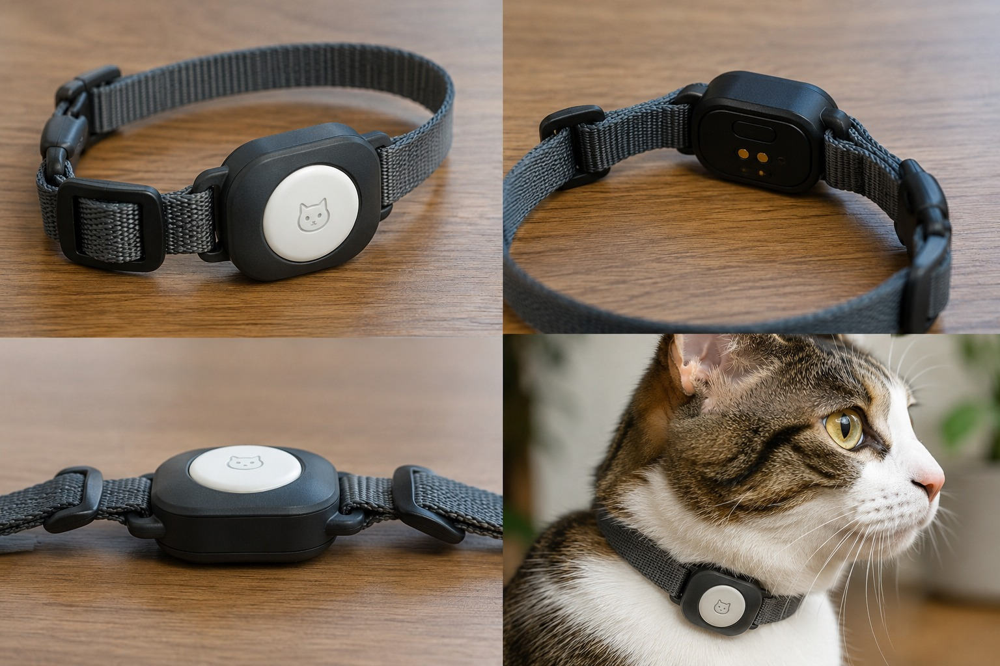

Find My / Bluetooth
Help locate your cat nearby and identify their last known location.
A lightweight smart collar designed to help you know where your cat is, how active they are, and how they are doing.

Our first prototype brings several key functions together in one small, lightweight and comfortable device for cats.
A compact platform designed around the needs of a small animal.
Help locate your cat nearby and identify their last known location.
Track movement, activity, sleep and periods of inactivity throughout the day.
Regularly measure temperature in the area where the device contacts the body.
See activity, temperature and device status from a simple mobile interface.
If someone finds your cat, their phone can access information for contacting the owner.
Optimized electronics and power management for long operation from a small battery.
01Prove that location, movement, temperature, connectivity and identification can work together in a tiny, lightweight and comfortable collar.
The production version turns the collar into a continuous digital companion for the owner, combining location, behavior and health signals in one experience.
Track your cat even when they are far from you.
See routes, movement history and favorite places on a map.
Identify sleep, walking, running, jumping and unusual behavior.
Build a long-term picture from temperature and activity signals.
Get notified about unusual drops in activity, prolonged inactivity or abnormal readings.
Intelligent energy management designed for everyday use.
Protection designed for real-world outdoor use.
Maps, history, activity, battery and health insights for the whole family.
Over time, the system can learn an individual behavioral baseline. Instead of comparing every cat to a generic average, AI can look for meaningful changes from what is normal for that specific animal.
Our goal is to create one of the smallest and lightest smart collars for cats, working quietly in the background while giving owners more information about their pet's safety, activity and wellbeing.
Follow the prototype and be first to hear when the production version launches.
No spam. Just project updates.